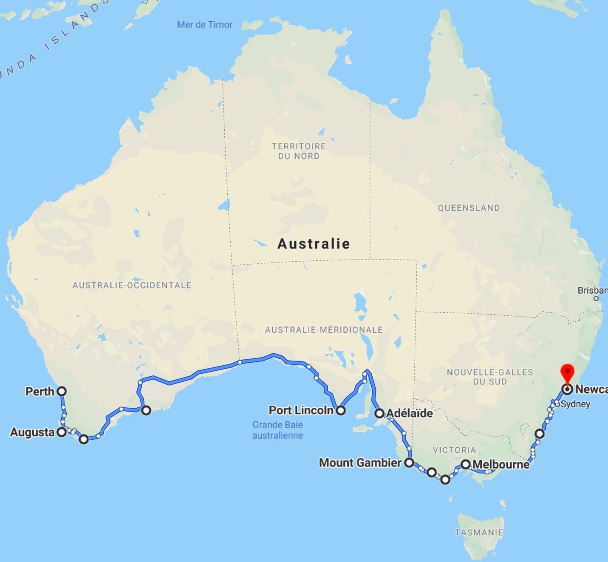

Feel the wide open space of Australia's vast outback beneath your wheels on one of the world's greatest
adventure drives as you cross the vast, semi-arid Nullarbor Plain.
The Nullarbor stretches across the southern edge of Australia between the goldfields of Western
Australia and the Eyre Peninsula in South Australia.
You can connect to this journey from Adelaide or Perth and drive west to east or east to west along the
Eyre Highway.
While this is a sealed road, it goes through remote areas and the trip requires thorough preparation.
You should carry extra petrol and plenty of water and food. You'll need a 4WD vehicle to venture off the
highway.
